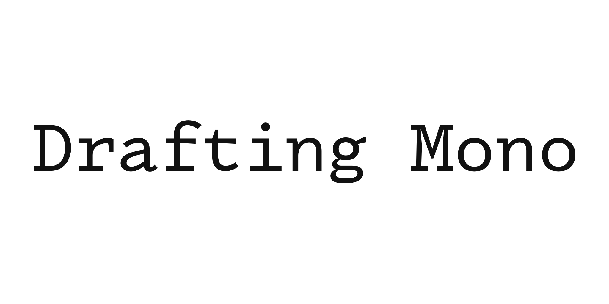
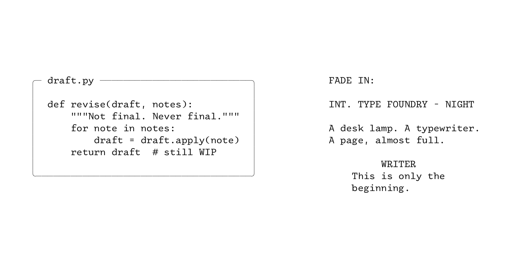
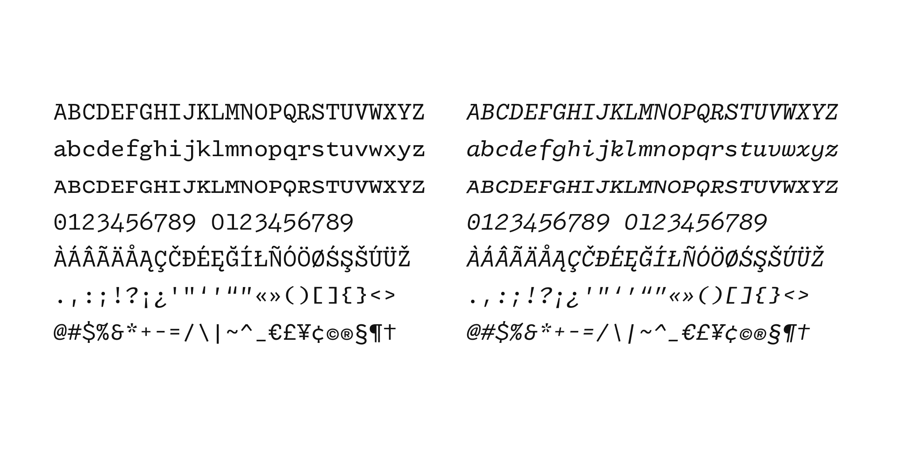
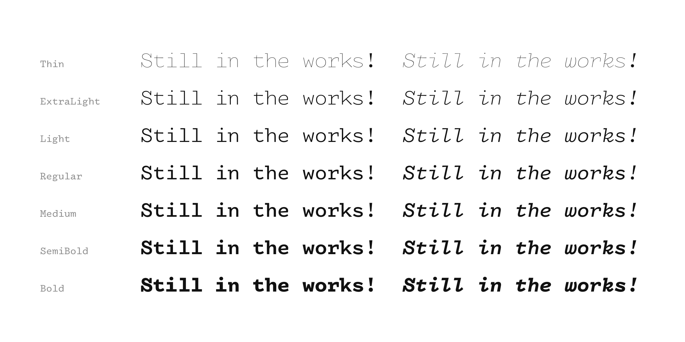

February 24th, 2021
To the editor:
I never saw myself making a monospaced font. There already exists a plethora of high-quality, free and open-source monospaced typefaces. Typefaces like IBM Plex Mono, Fira Code, and Roboto Mono. What could I possibly have to offer in a landscape already saturated with so many good options? Why invest time and energy catering to a need that doesn't exist?
But I am a designer, not just a font-maker, and I noticed something within my design practice: I kept reaching for something that wasn't quite there, a font that other typefaces came close to but didn't quite achieve. There was a hole in my typographic toolkit.
As a designer I love monospaced typefaces. There's something weirdly personal about them, like you're getting a behind-the-scenes look at the world. Programmers use them to code, movie scripts are written in them, and when book manuscripts are submitted to publishers, they're written in a monospaced font. There's something about them that screams, "this project is still in the works!" and I like that.

I like how they remind me of typewriters, of telegraphs and love poems. They remind me of library card catalogs, underground art movements, and the filled in spaces for name and date on old government documents. I like how they are born out of a practical necessity, and used out of a desire for neutrality, but are filled with idiosyncrasies, and always carry just a touch of humanity.
Typewriters are an ancestor of all monospaced fonts. It is this history I wish to tap into when I reach for them. I want to speak in the same neutral voice that permeates our predigital visual world.
And it is this desire that goes unfulfilled, because the monospaced fonts in my typographic toolkit are not timeless and neutral; they are modern. They are built for computers and they look new.
Attempts to mimic the look of typewriters literally look silly and unconvincing. They might try and capture the variability by making some letters lighter than others, but when every "e" has the same ink-splat, the eye knows something is off.
Perhaps a font designer might try and draw the idealized version of a letter, before all the irregularities of the mechanical process are introduced, but design decisions that make sense for a tiny metal stamp don't translate well to digital type, and the end result leaves something to be desired.
I wanted something that imitated the spirit of typewriters, not the literal look, but I wasn't sure such a thing was possible. To avoid looking silly it had to be designed as if for a computer, but somehow incorporate the logic of typewriters.
I started by drawing letters based off of an Underwood typewriter, literally transcribing the gestures. The serifs looked clunky and the ball-terminals, although beautiful, stood out.
I then redrew the same letters with a contemporary sensibility. This new alphabet read nicely and didn't stand out like before, but it looked too modern, and didn't remind me of the past. How could I marry these two?
The answer came from the letter "i." Most monospaced fonts today are also sanserif, but "i," being quite thin, wouldn't take up enough horizontal space. It is common, therefore, to add serifs to "i" to make it wide enough. Most sanserif monospaced fonts are not fully sanserif, they have a couple letters, like "i" or "l" that, out of necessity, have serifs.
What if I were to expand this "mixed serif" logic to other letters? What if I were to break a revered rule of type-design?
I created a hybrid alphabet, mixing serif and sanserif letters together. Sometimes half-committing, like "n" which has a serif on top but none on bottom. There's something tremendously inconsistent about this approach, but somewhere in that inconsistency lay the spirit of typewriters that I was looking to capture.
I moved forward, guided only by this sense of spirit. Ball-terminals were too on the nose, but without them "c" and "r" looked off. Putting a toothy wedge serif on the "r," like those found on "z" did the trick, but on a "c" looked angular and too modern. I instead created the feeling of a serif on the "c" by tightening the top curve, shaping it downward and to the right, as if starting to draw a ball but giving up before completion.

The resulting alphabet is weird, wildly inconsistent, and contains design decisions that if you were to explain out-loud to me I would reject as being overly stylistic and distracting.
Yet when I look at text written in it, I don't see a series of wacky design decisions. I see something that looks familiar. I don't see a period that's unusually bold, an "A" with a top serif and no bottom serifs, or the "4" that slants to the right and extends below the baseline. I see a neutral, professional, and human voice that's tonally consistent with that of a typewriter.
And so, Drafting Mono is born. An ode to our past. A celebration of inconsistencies. An embrace of that stage of a project where it's real enough to need a script, but still unfinished enough that those reading it are the trusted few tasked with bringing it to life. A placeholder font for a first-draft, and a promise of what's to come.

This is only the beginning.
Owen Earl
The project is developed on GitHub.